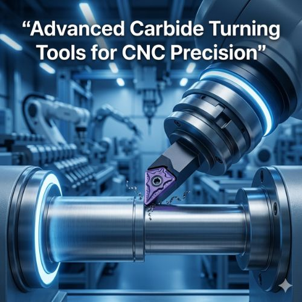

Advanced carbide turning tools are typically made from tungsten carbide combined with cobalt as a binder — creating a material significantly harder than traditional high-speed steel. In CNC machining, turning operations involve removing material from a rotating workpiece under intense heat and pressure. Standard tools wear out quickly, but carbide tools are engineered to maintain hardness even at extremely high temperatures.
These tools feature advanced geometries and coatings that improve cutting performance, allowing manufacturers to machine difficult materials such as hardened steel, stainless steel, titanium, and high-alloy metals more efficiently.
Modern production facilities operate with high-speed machining systems that demand cutting tools capable of performing under pressure. Advanced carbide turning tools handle these challenges through superior hardness — cutting through tough materials without losing their edge. Their stability ensures dimensional accuracy throughout the machining process, maintaining the tight tolerances that precision manufacturing demands.
Carbide tools offer extreme hardness, excellent wear resistance, and specialized surface coatings that reduce friction and heat generation. Precision-engineered cutting geometries allow smoother material removal, improved chip control, and superior surface finishes. These features collectively reduce tool replacement frequency, support high-speed machining, and lower overall manufacturing costs.
Advanced carbide turning tools serve automotive, aerospace, medical, and heavy machinery industries. Automotive manufacturers use them for engine components and transmission parts. Aerospace machinists rely on them for titanium alloy components with strict tolerances. Medical device manufacturers depend on their flawless finishing capability for surgical instruments and implants.
Attri Tech Machines Pvt. Ltd. has established itself as a global supplier and leading manufacturer exporter of advanced carbide turning tools. Combining advanced manufacturing technology with deep industry experience, the company delivers high-precision carbide tooling that meets international standards — supporting efficient, high-precision CNC production worldwide.
View Product Details at Attri Tech Machines